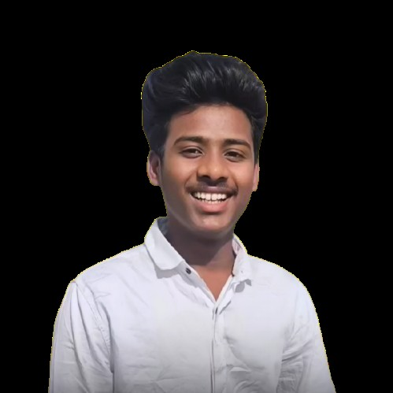

Bit About Me
At Cuts by Tharun, video editing is more than just cutting clips—it's about storytelling. I work with creators, brands, and businesses to transform raw footage into polished, professional videos that connect with audiences. Whether it's YouTube content, reels, ads, or cinematic projects, I focus on delivering visually appealing edits with smooth transitions, perfect timing, and impactful storytelling. With a strong eye for detail and creativity, I ensure every frame adds value to the final output. My goal is simple: make your content stand out.